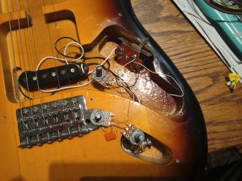
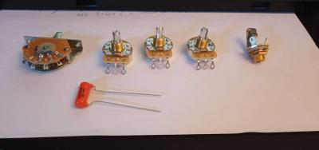
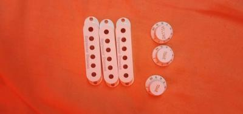
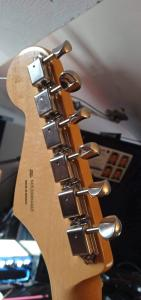
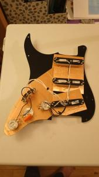

<div class="page">
  <div class="content">
    <div class="article">
      <div class="intro" style="text-align: justify">
        <p style="color: white">
          Il y a quelque temps, lors d'un des confinements, j'ai décidé de
          restaurer une guitare qui était chez mes parents. Une strat de chez
          Squier, entrée de gamme, sunburst manche palissandre, somme toute
          classique. Il s'agissait de la toute première guitare de mon
          grand-frère. Un seul micro était à poste, un beau Seymour-Duncan SSL.
          Notez avant toute chose qu'à ce moment-là, c'était environ la deuxième
          fois de ma vie que je touchais à ce genre d'engin. J'avais plutôt
          gratté de la classique en autodidacte jusqu'alors.
        </p>
      </div>
    </div>
    <div class="article">
      <div class="text" style="text-align: justify">
        <p style="color: white">
          Après avoir fait un bon nettoyage et un essai de jeu non concluant
          (pas de son dans l'ampli...), un petit coup d'œil dans l'électronique
          s'imposait : électronique de base, la capacité avait été remplacée (le
          câblage reprenait le câblage standard Fender) avec un switch 3
          positions. Un coup de bombe contact dans tout ça, j'inverse le câblage
          de la prise Jack qui pour une raison obscure était à l'envers et... ça
          marche !
        </p>
      </div>
      <div class="image">
        
      </div>
    </div>
    <div class="article">
      <div class="text" style="text-align: justify">
        <p style="color: white">
          Dans le doute, et voulant avoir 3 micros, je décide alors de tout
          remplacer. Les câbles, et l’électronique. Mais cette fois j'opte pour
          des composants d'une qualité supérieure, en y mettant évidemment le
          prix. Le switch est passé à 5 positions, pour avoir les superpositions
          de micros (1, 1+2, 2, 2+3, 3). Pour compléter l’ensemble, j’opte aussi
          pour deux autres SSL.
        </p>
      </div>
      <div class="image">
        
      </div>
    </div>
    <div class="article">
      <div class="text" style="text-align: justify">
        <p style="color: white">
          Dans la catégorie remplacement, j'ai changé l'accastillage également :
          les boutons de potentiomètres qui étaient cuits, les cache micros
          homogènes, les vis du pickguard qui n'étaient pas toutes présentes (et
          pour la plupart rouillées) et pour finir, le cache arrière
        </p>
      </div>
      <div class="image">
        
      </div>
    </div>
    <div class="article">
      <div class="text" style="text-align: justify">
        <p style="color: white">
          Quand on se lance dans ce genre de projet sans réelles connaissances…
          et bien, on apprend sur le tas. On apprend beaucoup, mais souvent
          c'est au dépend de la réussite. Tout semblait beau, la guitare sonnait
          bien, SAUF le manche. Une catastrophe, les frettes étaient usées, les
          cordes zinguaient à tout va. J'ai donc naïvement cherché à régler le
          manche pour m'apercevoir... qu'il ne possédait simplement pas de
          truss-rod. Misère ! Tout ce travail et cet argent pour une guitare
          injouable ! Fichu pour fichu, j'ai opté pour un manche neuf. Fender.
          Un beau manche en érable, classic 50s, soft V frettes jumbo medium
          pour les connaisseurs. Le remplacement ne s'est pas fait en toute
          simplicité, j'ai aussi dû apprendre les rudiments de la lutherie pour
          réussir à ajuster proprement
        </p>
      </div>
      <div class="image">
        
      </div>
    </div>
    <div class="article">
      <div class="text" style="text-align: justify">
        <p style="color: white">
          Évidemment, le design d'un manche 50s ne matchait pas du tout pour la
          mécanique de la guitare d'origine, qui avait une mécanique 70s.
          Rebelotte, on va chercher de la belle mécanique Fender adaptée.
          J'avais fait le choix de conserver toutes les pièces, pour d'autres
          projets, donc ce n'était pas perdu. Voici donc la tête finie, avec une
          mécanique rutilante !
        </p>
      </div>
      <div class="image">
        
      </div>
    </div>
    <div class="article">
      <div class="text" style="text-align: justify">
        <p style="color: white">
          Le jeu était enfin possible. Mais le simple bobinage des micros,
          couplé à une absence TOTALE de blindage (entrée de gamme n'oublions
          pas) rendait la guitare semblable à une antenne de tour de contrôle,
          je jurerai avoir entendu France Musique dans l'ampli ! Une fois n'est
          pas coutume, je décorde et m'intéresse alors au blindage. Finalement,
          rien de sorcier. Feuille de cuivre, soudure, et patience. Les
          logements de micros et surtout de la prise Jack m'ont donné plus de
          fil à retordre que prévu, mais le résultat final est satisfaisant. Une
          continuité mesurée au multimètre des clés jusqu'au Jack, une belle
          cage de Farraday! L'électronique devrait être assez protégée des
          interférences.
        </p>
      </div>
      <div class="image">
        
      </div>
    </div>

    <div class="article">
      <div class="text" style="text-align: justify">
        <p style="color: white">
          Ainsi s'est achevée cette expérimentation ! C'était la première fois
          que je me lançais dans la guitare électrique, et je ne suis pas déçu
          du voyage. Évidemment, après ça, il a fallu se mettre à jouer au
          médiator. Pas facile ! Tout ce que je peux dire c'est que la guitare
          électrique est un instrument bien plus subtil qu'il n'y parait, et
          tout le monde peut y trouver son compte. C'est un univers vaste, et
          même après tout ce travail, j’ai la sensation de n'avoir effleuré que
          la surface d'un domaine extrêmement vaste, une interrogation en
          appelant une autre, systématiquement.
        </p>
      </div>
      <div class="image">
        
      </div>
    </div>
  </div>
</div>
